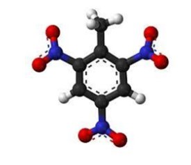
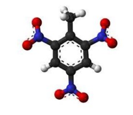

Fulea Mihai
Nitrarea reprezintă o reacție de subtituție prin care se obțin nitroderivați, compuși organici ce conțin gruparea funcțională nitro
Având multe aplicații industrial importante, reacția de nitrare este folosită în deosebi pentru obținerea de nitroderivați aromatici (nitrobenzenul). De asemenea este folosită în scară largă pentru obținerea materialelor explozive TNT
TNT
TNT
TNT este numele scurtat utilizat pentru trinitrotoluen. Este o moleculă de toluen cu trei grupe nitro subtituite la pozițiile 2, 4 și 6. Astfel, mai exact, TNT este 2, 4, 6-trinitrotoluen. Formula chimică a acestui compus este C6H2(NO2)3CH3
TNT a fost pregătit pentru prima dată în 1863 de chimistul german Julius Wilbrand, dar efectele sale au trecut neobservate timp de câțiva ani, în principal pentru că era mai greu de detonat și mai puțin puternic decât alți explozivi
 


Utilizări
1
Trinitrotoluenul este destul de stabil și nu reacționează la șocuri ușoare, acest lucru făcându-l mai ușor de transportat. Pentru explozia TNT este nevoie de un detonator
2
Având acest avantaj al stabilității este unul dintre cei mai folosiți explozibili atât în sfera civilă cât și în cea militară
3
TNT este utilizat în mare parte în armată, în special la fabricarea bombelor, torpilelor și rachetelor. De asemenea mai este folosit în construcții și în mică parte în minerit
TNfenol
TNfenol
Denumit și acid picric, 2,4,6-trinitrofenolul este un compus organic, sub formă de cristale galbene cu gust amar greu solubile în apă, ușor solubile în benzol, etanol
Acidul picric este toxic, produce reacții alergice în contact cu pielea, prin depozitare cu apă se reduce sensibilitatea explozivă la lovituri sau frecări
Acidul se utilizează la obținerea explozivilor și a vopselelor de culoare galbenă. Are proprietăți antiseptice și se utilizează în medicină la tratarea externă a arsurilor ușoare.
Acidul picric a fost obținut în 1771 de chimistul englez Peter Woulfe prin tratarea cu acid azotic a pigmentului de indigo. A fost primul colorant sintetic și a fost folosit drept vopsea galbenă
În 1885 chimistul francez Jean-Haptiste Andre Dumas a realizat că acidul picric este foarte explozibil

Nitrarea fenolului